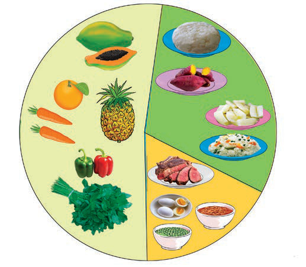

Vyakula vya kulinda mwili

Vyakula vya kuupa mwili nguvu
Vyakula vya kujenga mwili
Maelezo ya picha: Mchoro wa makundi ya vyakula katika mlo kamili. Kushoto ni vyakula vya kulinda mwili; juu kulia ni vyakula vya kuupa mwili nguvu; chini kulia ni vyakula vya kujenga mwili.
Kielelezo namba 2: mfano wa makundi makuu ya vyakula katika mlo kamili.
Kazi ya kufanya namba 2
1.
Bainisha vyakula mbalimbali vinavyopatikana katika mazingira yako.
2.
Ainisha vyakula hivyo katika makundi makuu sahihi.
Vyakula vya kuupa mwili nguvu
Vyakula vya kuupa mwili nguvu ni vyenye virutubisho vya wanga au kabohaidreti pamoja na mafuta. Vyakula vyenye kabohaidreti ni kama vile mahindi, viazi, mihogo, ndizi, wali na mkate. Vyakula vyenye mafuta ni kama vile nazi, karanga, mafuta na parachichi. Vyakula hivi huuwezesha mwili kuwa na uwezo wa kufanya shughuli mbalimbali zikiwemo kucheza, kulima na kutembea. Vilevile, mafuta husaidia kuupa mwili joto. Kielelezo namba 3 kinaonesha mifano ya vyakula vyenye virutubisho vya kabohaidreti na mafuta.